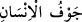

istiğrâk bildiren “ ” harf-i cerri hükmün genel olduğunu ifâde etmek içindir. Kalp, çam
” harf-i cerri hükmün genel olduğunu ifâde etmek içindir. Kalp, çam
kozalağı şeklinde küçük bir et parçasıdır. Allah Teâlâ kalbi insanın göğsünün sol
yanında can damarına bağlı olarak yaratmış ve ilmin mahalli kılmıştır.
“ insanın içidir. “Ama gerçek şu ki, gözler kör olmaz; lâkin göğüsler
içindeki kalpler kör olur.” (el-Hac, 22/46) âyetinde olduğu gibi, burada “içinde”
lafzının zikredilmesi, daha fazla beyan ve îzah içindir.
Mânâ şöyledir: Allah Teâlâ hiç kimsenin içinde iki kalb yaratmamıştır. Çünkü kalb
hayvânî rûhun kaynağı ve kuvvetlerin menbaıdır. Bu sebeple birden fazla kalp olması
uygun değildir. Çünkü hayvânî (canlılık veren) ruh bir tanedir.
Kurtubî’nin dediği gibi burada münafıkları kınama vardır. Yâni Allah Teâlâ bir
insanda iki kalp yaratmamıştır ki bunlardan birinde küfür, sapıklık, ısrar ve huzursuzluk;
diğerinde ise îman, hidâyet, Hakk’a yönelme/inâbe ve huzur olsun. Öyleyse bu
münafıklara ne oluyor ki gönüllerinde olmayan (îmânı) varmış gibi, aksine olarak
içlerinde olan küfrü yokmuş gibi gösteriyorlar?!
İbn Abbas (r.a.)’tan rivâyet edildiğine göre münâfıklar “Muhammed’in iki kalbi var.
Bir kalbi bizimle, bir kalbi de ashabıyla birlikte.” diyorlardı. İşte Allah Teâlâ böylece
onları yalanladı.”
Bazıları şöyle demiştir: Araplar akıllı ve tecrübeli insanın iki kalbi olduğunu iddiâ
ederdi. İşte âyet bunu reddetmektedir. Arap dâhilerinden Ebû Ma‘mer’in iki kalpli
olduğu söylenirdi. O, Araplar’ın hâfızası ve anlayışı en kuvvetli olanlarındandı. Bölge,
belde ve ülke yollarını çok iyi bilirdi. Bu adam Peygamberimiz (s.a.)’e buğz ederdi. Bu
kişi Cemîl b. Esed idi. Evvelâ: “Göğsümde iki kalp var. Ben bu iki kalple
Muhammed’in bir kalbiyle anladığından daha iyi anlarım. Benim bilgim ve idrâkim
Muhammed’inkinden daha fazla olsun diye benim göğsüme iki kalp koymuşlardır.”
derdi. İnsanlar da onun iddiâsında doğru olduğunu zannederdi. Bedir günü Allah
müşrikleri bozguna uğratınca, onların arasında bu adam da mağlub oldu.
Ayakkabılarının biri elinde diğeri ayağında çölde kaçarken Ebû Süfyan ona rastladı.
“Ayakkabım nerede, ayakkabım nerede?” diyor, ayakkabısının birinin elinde olduğunu
idrak edemiyordu. Ebû Süfyan ona ayakkabının birisinin elinde, diğerinin ayağında
olduğunu söyledi. O gün anladılar ki bu adamın iki kalbi olsaydı elindeki ayakkabıyı
unutmazdı.
Fakir (Bursevî) der ki: Bir de insanlar arasında “Falan kimsenin iki kalbi var.”
denilir. Bu söz gerçek anlamda değildir. Onlar bu sözle ancak o kimseyi sanki iki
adammış ve iki kalbi varmış gibi kuvveti mükemmel ve cesâreti tam olarak vasfetmek
istemektedirler.
Âyette kalbin sadece muhabbet için yaratıldığına işâret vardır. İşte kalp birdir, sevgi
de birdir. Onun için kalp, ortağı olmayan tek bir sevgiliye yaraşır. Nitekim şâir buna
şöyle işâret etmiştir:
Kalbim, dostun şefkat evidir, bu sebeple